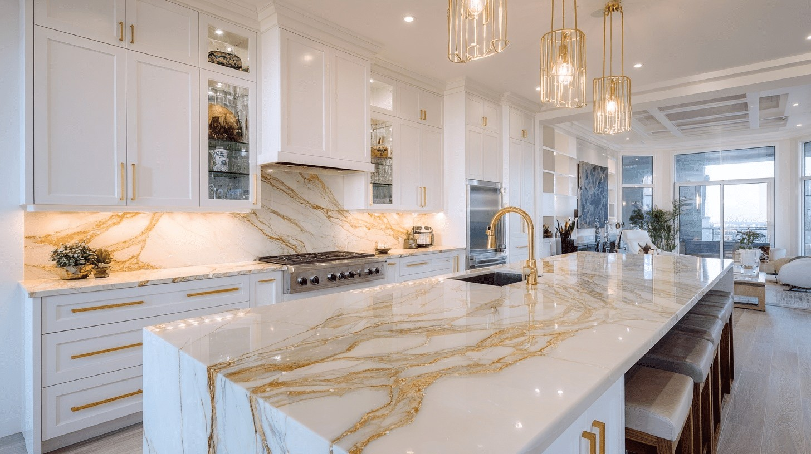
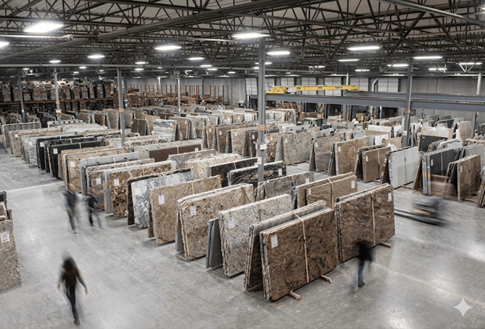
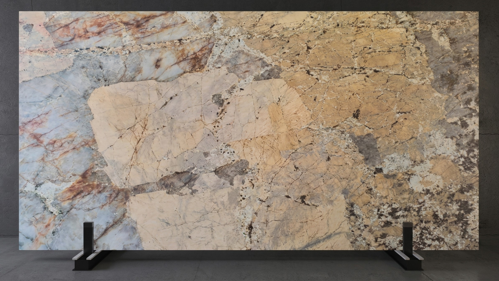

Every material, every consideration, and every question to ask before you stand at a slab yard with a decision to make. Countertops take a significant portion of any remodel budget and set the visual tone for everything around them. Getting this right matters more than almost any other finish decision in the house.

Countertops take a significant share of most kitchen and bathroom remodel budgets — and they earn it. They are the largest continuous surface a person interacts with in these spaces every single day. They take water, heat, cutting force, impact, spills, and cleaning products for decades. And they set the visual tone for everything surrounding them.
The countertop decision deserves more time and more information than it typically gets. Most homeowners walk into a showroom, look at 4-inch samples under fluorescent lighting, fall in love with something, and commit — without fully understanding what they're buying, how it will perform, or what it will actually look like installed across twelve linear feet of kitchen.
This guide gives homeowners the information they need before any of that happens.

A stone yard shows full slabs, not samples. The variation visible across an entire slab is what determines how the countertop will actually look installed.
Before any material conversation begins, understand the two ways countertops are constructed — because not everything that looks like stone is stone all the way through.
Full slab countertops are the material you select through its full thickness — typically 2cm or 3cm. The edge profile is cut from the same slab. When you look at the edge of a full slab granite or quartzite countertop, you see the actual material through its full depth. This is the standard for natural stone and most quality engineered surfaces.
Laminated or mitered countertops use a thinner piece of stone — sometimes as thin as 1.2cm — bonded to a substrate of plywood, MDF, or concrete board. A mitered edge piece is added to create the appearance of a full-thickness slab at the edge. When done well this is nearly invisible. When done poorly, the seam at the laminated edge shows and the countertop does not hold up as well over time at that joint.
There is nothing inherently wrong with a laminated countertop. Many beautiful installations use this construction. What matters is knowing which one you are buying — and understanding that the price difference between a thin stone laminated over plywood and a full 3cm slab reflects an actual difference in what you are getting.
When getting a countertop quote, ask this question directly. Know the thickness of the material being specified and whether any substrate is involved. A fabricator who can answer this specifically understands their own product.
Natural stone is quarried from the earth, cut into slabs, and fabricated to fit the space. No two slabs are identical. The variation is the feature — but it also means the sample at the showroom is not the countertop in the installation.
The most widely installed natural stone countertop in residential construction — for good reason. Granite is hard, heat-resistant, scratch-resistant, and available in an enormous range of colors and movement patterns. From nearly uniform absolute black to dramatically veined Blue Bahia, granite covers more visual territory than any other stone category.
Granite is porous and requires sealing — typically once a year for moderate-use surfaces. A properly sealed granite surface resists staining well. An unsealed one absorbs oil, wine, and acidic liquids and shows it. Granite is appropriate for almost any application: kitchen countertops, bathroom vanities, outdoor kitchens, bar tops.
Quartzite is a metamorphic rock — sandstone transformed by intense heat and pressure into one of the hardest natural stones available. It is frequently confused with engineered quartz because the names are similar. They are entirely different materials. Quartzite is natural stone. Quartz is an engineered surface. This distinction matters enormously.
Quartzite has the elegant, often dramatic veining of marble with significantly better hardness and stain resistance. Many homeowners who want the look of marble but need better performance end up with quartzite — and are glad they made the distinction. Super White, Taj Mahal, and Sea Pearl are among the most recognized varieties. Requires sealing like granite.
Marble is among the most beautiful natural surfaces available — and the most demanding to live with in a kitchen. It is soft relative to granite and quartzite, which means it scratches. It is highly porous and etches from acidic contact — lemon juice, vinegar, wine — leaving a dull spot in the polished surface regardless of sealing.
Marble in a kitchen is a lifestyle decision, not just a design decision. It will develop a patina over time. Many people love this. Many don't realize it's coming. Where marble belongs without reservation: primary bathroom vanities, powder rooms, fireplace surrounds, and baking islands where the patina is appreciated. Carrara, Calacatta, and Statuario are the most recognized varieties.
Soapstone is naturally non-porous — it requires no sealing and resists bacteria, staining, and chemical exposure better than most natural stones. It is highly heat-resistant and has been used for sinks, wood stove surrounds, and laboratory countertops for centuries.
Soapstone is soft and scratches easily — most owners embrace this as character and treat it with mineral oil periodically. The color deepens over time from light gray to near-black. This is a feature if expected, a surprise if not. Its design profile suits farmhouse, traditional, and craftsman interiors with a distinctive authenticity no engineered surface replicates.
Travertine is a form of limestone characterized by its porous structure with natural voids. The natural voids collect debris, are difficult to clean thoroughly, and in kitchen applications can harbor bacteria if not maintained carefully. Travertine is also softer than granite or quartzite and susceptible to etching from acidic substances, similar to marble.
Where travertine is well-suited: bathroom vanities in lower-traffic applications, powder rooms, and decorative applications where its warm, aged character is the design intent. In a high-use kitchen environment, other materials perform more reliably with less maintenance demand.
Engineered countertop surfaces have expanded significantly. Some are excellent products. All are different from one another in ways that matter — and the names are frequently used interchangeably in ways that obscure those differences.
Engineered quartz — Silestone, Caesarstone, Cambria, MSI Q, and many others — is composed of approximately 90 to 95 percent ground quartz bound together with polymer resins and pigments. It is non-porous and requires no sealing. It resists staining, bacteria, and everyday kitchen abuse well. It is harder and more consistent than natural stone — which means it is also more predictable in appearance. If consistency of pattern across a large installation matters, engineered quartz delivers it more reliably than natural stone.
The limitations: engineered quartz is not as heat-resistant as natural stone. Hot pans placed directly on quartz can cause thermal shock and crack the resin binders — always use trivets. It also does not have the depth and natural character of stone. The pattern repeats. In high-end applications where the countertop is meant to be the visual centerpiece, a striking natural slab reads differently than an engineered surface. For most residential kitchens where performance, consistency, and ease of maintenance are the priorities, engineered quartz is an excellent choice.
Sintered stone — Dekton by Cosentino, Neolith, and similar products — is produced by applying intense heat and pressure to a combination of raw materials including glass, porcelain, and quartz. The result is an extremely dense, non-porous slab that is among the most technically durable countertop materials available. It is scratch-resistant, heat-resistant (hot pans can be placed directly on it), UV-resistant, and completely non-porous with no sealing required. It performs excellently in outdoor kitchen applications.
The considerations: sintered stone is brittle. It does not flex — which means it requires excellent substrate support and can crack under impact in ways that more flexible materials would not. It is significantly more expensive than engineered quartz. And it requires a fabricator experienced with the material — standard techniques need adjustment for sintered stone's extreme hardness. When the right fabricator installs it correctly, sintered stone is genuinely exceptional.
Large-format porcelain slabs — sometimes called ultracompact surfaces — are produced from fired clay and mineral compounds, similar to porcelain tile but in slab format typically 120 by 60 inches or larger. They are non-porous, heat-resistant, scratch-resistant, and available in a wide range of finishes including very realistic stone-look patterns at a price point below sintered stone.
The key consideration is thickness — porcelain slabs are typically 6mm to 12mm, thinner than natural stone or engineered quartz. This requires careful handling, excellent substrate, and a fabricator experienced with large-format porcelain. Thin porcelain is unforgiving of substrate imperfections and can crack under point loads. Installed correctly by an experienced fabricator, porcelain slab represents a strong value proposition with excellent performance characteristics.
Recycled glass countertops embed pieces of post-consumer glass — bottles, windows, dishware — in a cement or resin binder, creating a surface with a distinctive, colorful, textural appearance. No two installations are the same. Performance characteristics depend heavily on the binder: cement-based versions are porous and require sealing; resin-based are non-porous and more resistant to staining.
This is a specialty material with a specific design profile. It is not an all-purpose countertop choice — but in the right application, particularly in eclectic, contemporary, or sustainability-focused interiors, it is genuinely beautiful and one-of-a-kind. If this material calls to you, find a fabricator who has worked with it before.
Cultured marble is a manufactured product composed of marble dust and polyester resin, cast in a mold and coated with a gel coat finish. It is not marble — it contains marble aggregate, but it is an engineered composite. It is most commonly found in bathroom vanity tops and shower surrounds, often as a single molded piece with an integrated sink.
Cultured marble is non-porous and requires no sealing. It is less expensive than natural stone vanity tops and the integrated sink eliminates the caulk joint between a separate sink and countertop. The gel coat finish can yellow over time and is susceptible to scratching. Harsh abrasive cleaners damage it permanently. It is not appropriate for kitchen applications. In bathroom applications where budget is a consideration and the integrated top is practical, cultured marble performs adequately with appropriate care.
Laminate countertops — Formica, Wilsonart, and their competitors — have been the budget countertop choice for decades, and they are frequently dismissed in design-forward conversations. That dismissal is increasingly outdated.
The visual quality of today's laminate has improved dramatically. High-definition printing technology now produces surfaces that closely replicate stone, wood, and other materials at a level not possible even ten years ago. In a kitchen where hard surface countertops are genuinely beyond budget, a quality laminate with a contemporary edge profile delivers a significantly better result than a cheap engineered product installed poorly.
The honest performance profile: laminate is not heat-resistant — hot pans damage it permanently. It is not as scratch-resistant as stone or quartz. It cannot be refinished or repaired if significantly damaged. And the edge is vulnerable to moisture if not properly sealed and maintained. The seam between sections, if the kitchen requires multiple pieces, is more visible than in stone or quartz.
What laminate does well: it is available in an enormous range of colors and patterns including matte finishes that other categories offer less accessibly. It is fast to fabricate and install. It is easy to replace when the kitchen is eventually renovated. In rental properties, starter homes, and spaces where the countertop is purely functional — it provides reasonable performance at a price point that frees budget for other decisions.
If hard surface countertops are out of reach for the current budget, say so when talking to your contractor. A good contractor will give you honest guidance about laminate options rather than steering you toward the cheapest engineered product that barely fits the budget. The best laminate available today is a better result than a mediocre quartz rushed to fit a number.
Natural stone slabs have movement — veining, color variation, mineral inclusions — that makes each slab unique. This is the most compelling characteristic of natural stone and the one most likely to produce a surprise if it isn't understood before commitment.
When visiting a slab yard to select stone, the conversation must include: show me how this slab will be cut for my countertop layout, and show me where the veining will fall.
A skilled slab yard representative can lay out the cut lines on the slab and show you exactly which section becomes the perimeter countertop, which becomes the island, and how the veining flows — or doesn't flow — across the seam between sections. A dramatic vein that runs beautifully through one section may not continue into the adjacent section at all. A busy, swirling pattern that looks stunning in a full slab may feel chaotic across a standard kitchen countertop.
Ask specifically:
For dramatic veined stones, some fabricators offer bookmatching — placing two adjacent sections of the slab as mirror images to create a symmetrical vein pattern across a large island. This is a design choice that requires planning at slab selection. It cannot be added after fabrication begins.
Natural stone — particularly quartzite and some granites — can have natural fissures: linear separations in the stone that are part of its natural geology. These are not cracks. They are not defects. They are not a fabrication failure. They are features of the material. A homeowner who sees a fissure in their installed quartzite and calls it a crack needs to have understood fissures before the stone was selected. Ask the slab yard representative to point out any fissures and where they will fall in the finished installation. Make peace with them before you commit — or choose a different slab.

Dramatic veining is what makes natural stone a design centerpiece — and what requires a conversation at the slab yard before any cuts are made.
The single most useful thing a homeowner can do after selecting a countertop material is get a physical sample — a piece of the actual material, not a printed card — and use it as the anchor for every subsequent design decision in the room.
Countertops set the visual tone for everything around them. Cabinet door color, backsplash tile, hardware finish, paint color, flooring transition — all of these decisions are made better when made in direct relationship to the countertop sample rather than from memory or imagination. A sample on the table at the cabinet showroom changes what looks right. A sample held against a tile at the tile supplier eliminates guesswork.
What to ask for: a cutoff piece from the specific slab being considered, or a sample large enough to show the full range of color and movement in that material. A 4-inch square shows texture. A 12-inch square shows character. Bigger is better for any material with significant movement or veining.
Most fabricators and slab yards will provide a sample from the slab reserved for your job. Ask for it at the time of selection. Bring it to every subsequent design appointment.
Select the countertop first. Then the cabinet color. Then the backsplash. Then the hardware. Then the paint. Every subsequent decision is made in relationship to the countertop — not the other way around. The homeowner who chooses paint first and countertops last is designing in reverse and will be making compromises the entire way through.
The fabricator is the craftsperson who cuts, edges, and installs the countertop. The same slab in the hands of an excellent fabricator and a mediocre one produces dramatically different results — at the seams, at the cutouts, at the edge profiles, and at every detail visible from across the room.
It is worth saying directly: the majority of stone fabricators in residential work are skilled tradespeople who take pride in their craft. Stone fabrication is a specialized trade — cutting, edging, and polishing natural stone and engineered surfaces requires investment in equipment and technique. Most fabricators working in residential kitchens do this work well.
A good contractor has a fabricator relationship built on years of consistent work. Ask who they use and whether they've worked together before. A contractor with a long-term fabricator relationship has built it because the work is reliable. A contractor who uses whoever is cheapest for each job has not.
Seam quality and sink cutout quality are the two most revealing aspects of fabrication skill. A tight, nearly invisible seam in a dramatic stone requires precision and patience. A sink cutout with clean, consistent edges for an undermount sink requires experience. Ask to see examples of both before committing.
Sintered stone, thin porcelain slab, and dramatic quartzite with fissures require fabricators who have worked with those specific materials before. If your countertop choice is outside the mainstream, confirm the fabricator has relevant experience before the slab is reserved.
Countertop fabrication does not begin until after the template appointment — and the template appointment cannot happen until cabinet installation is complete and the cabinets are level and shimmed to final position. This sequence is non-negotiable. Any fabricator who offers to template before cabinets are fully installed is offering to produce a countertop that may not fit.
At the template appointment, the fabricator takes precise measurements of the countertop layout. Modern fabricators often use digital templating tools that produce a laser-accurate digital model. The template appointment is also when final decisions are confirmed: sink position, faucet hole placement, edge profile, seam locations, and any special details. Everything that affects the fabricated piece is confirmed at this appointment. Changes after templating restart the fabrication process for that section.
From completed template to countertop installation, a realistic timeline is two to four weeks under normal conditions. This reflects the queue at the fabrication shop, the specific material, and the complexity of the job. Premium or unusual materials may take longer. Plan for three weeks. Do not plan the rest of the kitchen around a countertop arriving in one week unless the fabricator has confirmed that timeline in writing.
The countertop lead time — cabinet installation to template to fabrication to installation — is often the longest single lead time in a kitchen remodel after cabinets. A project that doesn't account for it creates a hole in the schedule that everyone waits around. Confirm the fabricator's current lead time at the time of slab reservation, not the template appointment.
An undermount sink requires a cutout in the countertop fabricated to the exact dimensions of that specific sink model. The fabricator cannot guess. They need the actual sink — or the manufacturer's cutout template — before the template appointment.
The homeowner who hasn't yet ordered the sink when the fabricator arrives is delaying fabrication. The homeowner who changes the sink model after templating is restarting the fabrication process for the countertop section containing the sink cutout. This also applies to faucet holes — know how many holes and where before template day.
Have the sink and faucet on site, or have the manufacturer's cutout template confirmed, before the template appointment is scheduled. Ask the fabricator when booking: what do I need to have on hand for template day?
This question produces different answers from different contractors and fabricators — and the answer needs to be known before installation day, not discovered during it.
Some fabricators set the undermount sink as part of their installation scope — silicone, mounting clips, and all. Others deliver the countertop with the cutout complete and leave sink setting to the plumber or general contractor. Neither approach is wrong. What is wrong is arriving at installation day without a clear answer — which leaves the sink sitting unset while trades wait around and finger-point at each other.
Ask your contractor: who sets the sink — the fabricator or the plumber? Confirm the fabricator's answer separately. If the answers disagree, resolve it before template. A sink mounting conversation that hasn't happened before installation day is a conversation that happens in the middle of an otherwise good installation day, while the countertop sits on sawhorses and the kitchen is still unusable.
Countertop decisions are among the most significant and most permanent in any kitchen or bathroom remodel. Remi captures your specific project, your household, your design direction, and your priorities in 15 minutes. Then your Remodelry Concierge will be in touch within 24 hours — already knowing your project, already on your side before any showroom conversation happens.
Talk to Remi — It's FreeFree · No obligation · Your Concierge calls within 24 hours, already knowing your project